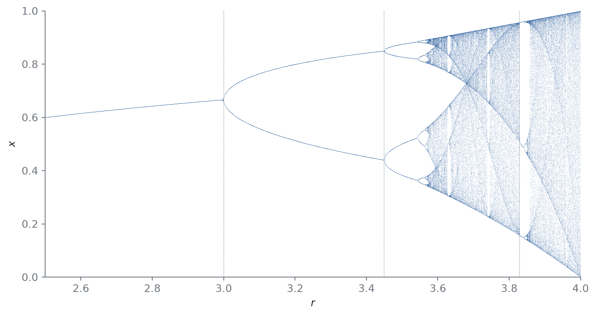
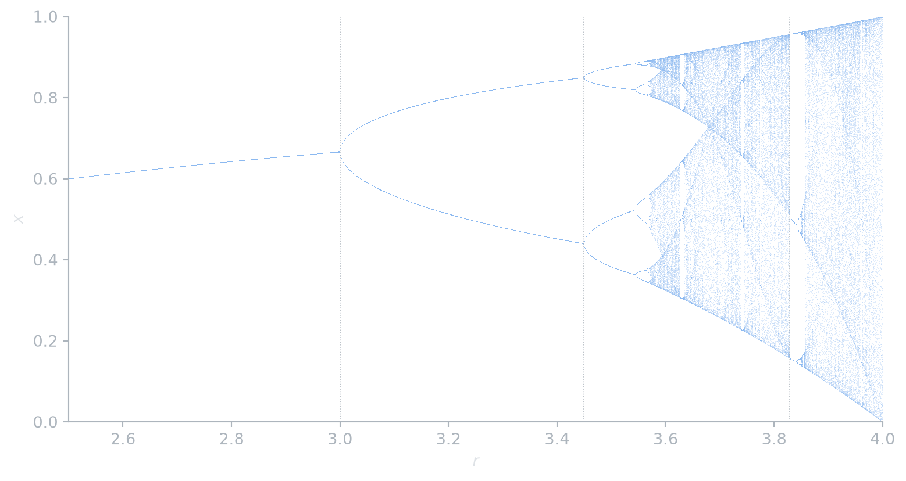

The logistic map and period doubling
maps
bifurcations
chaos
The one-line model \(x_{n+1} = r x_n (1 - x_n)\), whose orbits settle, oscillate, double their period again and again, and turn chaotic.
May (1976) argued that even the simplest nonlinear models deserve careful study, because their behavior can be astonishingly rich. The standard example is the logistic map \[ x_{n+1} = f_r(x_n) = r\,x_n\,(1 - x_n), \qquad x_n \in [0, 1], \quad 0 \leq r \leq 4. \tag{1}\]
Fixed points and the first doubling
Proposition 1 For \(1 < r < 3\), the fixed point \(x^* = 1 - 1/r\) of Equation 1 is stable, and it loses stability at \(r = 3\).
Proof. A fixed point of a map is stable when \(|f'(x^*)| < 1\). Here \(f_r'(x) = r(1 - 2x)\), so \(f_r'(1 - 1/r) = r(2/r - 1) = 2 - r\), and \(|2 - r| < 1\) exactly when \(1 < r < 3\).
At \(r = 3\) the multiplier passes through \(-1\). Orbits near \(x^*\) then alternate from side to side, and a stable orbit of period 2 appears.
Proposition 2 The period-2 orbit \(\{p, q\}\) of Equation 1 exists for \(r > 3\) and is stable for \(3 < r < 1 + \sqrt 6 \approx 3.449\).
Proof. The points \(p, q\) are the roots of \(f_r(f_r(x)) = x\) other than the fixed points, namely the roots of \(r^2x^2 - r(r+1)x + (r+1) = 0\). These are real and distinct exactly when \(r > 3\). They satisfy \(p + q = (r+1)/r\) and \(pq = (r+1)/r^2\). The multiplier of the cycle is \[ f_r'(p) f_r'(q) = r^2 (1 - 2p)(1 - 2q) = r^2 \bigl(1 - 2(p + q) + 4pq\bigr) = -r^2 + 2r + 4. \] This equals \(1\) at \(r = 3\) and \(-1\) at \(r = 1 + \sqrt 6\), and lies strictly between them for \(3 < r < 1 + \sqrt 6\).
Try it: cobweb diagram
A cobweb diagram iterates the map graphically: go up to the curve, across to the diagonal, and repeat. Try \(r = 2.8\) (spiralling into the fixed point), \(r = 3.2\) (a 2-cycle), \(r = 3.5\) (a 4-cycle) and \(r = 3.9\) (chaos).
The cascade
The 2-cycle itself doubles to a 4-cycle, then an 8-cycle, and so on. The doublings accumulate at \(r_\infty \approx 3.5699\), beyond which most parameter values give chaotic orbits (Figure 1). The chaotic region is broken by periodic windows. The widest begins at \(r = 1 + \sqrt 8 \approx 3.828\) with a stable 3-cycle.
Code
r = np.linspace(2.5, 4.0, 2000)
x = np.full_like(r, 0.5)
for _ in range(1000):
x = r * x * (1 - x)
R, Xs = [], []
for _ in range(250):
x = r * x * (1 - x)
R.append(r)
Xs.append(x)
R, Xs = np.concatenate(R), np.concatenate(Xs)
def draw(fig, ax, c):
ax.scatter(R, Xs, s=0.05, lw=0, color=c.accent, alpha=0.5, rasterized=True)
for rv in (3, 1 + np.sqrt(6), 1 + np.sqrt(8)):
ax.axvline(rv, color=c.muted, lw=0.6, ls=":")
ax.set(xlim=(2.5, 4), ylim=(0, 1), xlabel=r"$r$", ylabel=r"$x$")
themed(draw, figsize=(8, 4.2))

If \(r_k\) is the parameter of the \(k\)-th doubling, the ratios of successive gaps converge: \[ \delta = \lim_{k \to \infty} \frac{r_k - r_{k-1}}{r_{k+1} - r_k} = 4.6692\ldots \] Feigenbaum (1978) discovered that this constant is universal: the same \(\delta\) appears for any smooth one-humped map with a quadratic maximum, and it has since been measured in fluid, electronic and chemical experiments. The next post makes “chaotic” precise with Lyapunov exponents.
References
Feigenbaum, Mitchell J. 1978. “Quantitative Universality for a Class of Nonlinear Transformations.” Journal of Statistical Physics 19 (1): 25–52. https://doi.org/10.1007/BF01020332.
May, Robert M. 1976. “Simple Mathematical Models with Very Complicated Dynamics.” Nature 261: 459–67. https://doi.org/10.1038/261459a0.
Citation
BibTeX citation:
@online{le2026,
author = {Le, Nam},
title = {The Logistic Map and Period Doubling},
date = {2026-08-29},
url = {https://dynamics.namln.org/posts/2026-08-29-logistic-map/},
langid = {en}
}
For attribution, please cite this work as:
Le, Nam. 2026. “The Logistic Map and Period Doubling.”
August 29. https://dynamics.namln.org/posts/2026-08-29-logistic-map/.